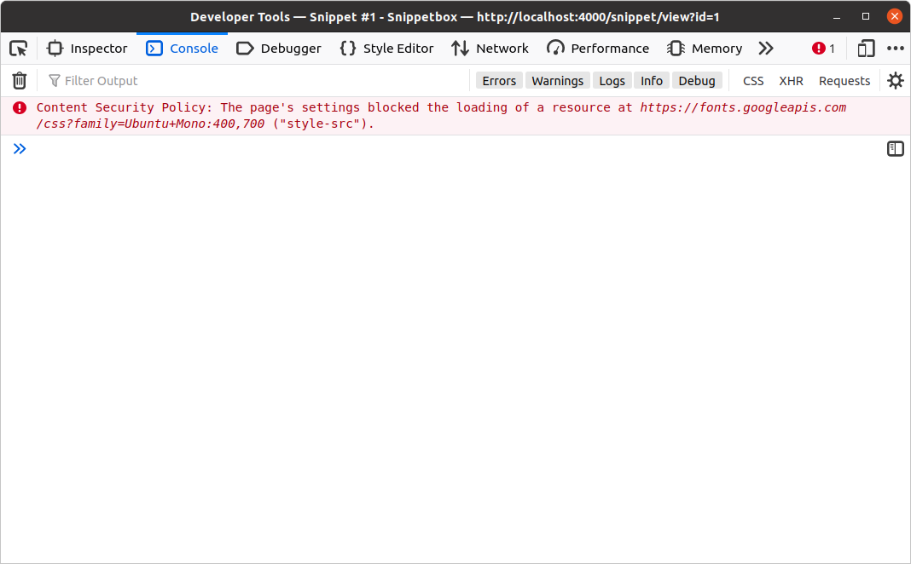

تنظیم هدرهای مشترک
بیایید الگویی که در فصل قبلی یاد گرفتیم را به کار ببریم و میدلوری ایجاد کنیم که به طور خودکار هدر Server: Go ما را به هر پاسخ اضافه میکند، همراه با هدرهای امنیتی HTTP زیر (مطابق با راهنمای فعلی OWASP).
Content-Security-Policy: default-src 'self'; style-src 'self' fonts.googleapis.com; font-src fonts.gstatic.com Referrer-Policy: origin-when-cross-origin X-Content-Type-Options: nosniff X-Frame-Options: deny X-XSS-Protection: 0
اگر با این هدرها آشنا نیستید، به سرعت توضیح میدهم که چه کاری انجام میدهند.
هدرهای
Content-Security-Policy(که اغلب به CSP خلاصه میشوند) برای محدود کردن مکانهایی که منابع صفحه وب شما (مثلاً JavaScript، تصاویر، فونتها و غیره) میتوانند از آنها بارگذاری شوند، استفاده میشوند. تنظیم یک سیاست CSP سختگیرانه به جلوگیری از انواع مختلف حملات اسکریپتنویسی بین سایتی، کلیکجکینگ و سایر حملات تزریق کد کمک میکند.هدرهای CSP و نحوه کار آنها یک موضوع بزرگ است و اگر قبلاً با آنها برخورد نکردهاید، توصیه میکنم این مقدمه را بخوانید. اما، در مورد ما، هدر به مرورگر میگوید که بارگذاری فونتها از
fonts.gstatic.com، استایلشیتها ازfonts.googleapis.comوself(منبع خودمان) مجاز است، و سپس همه چیز دیگر فقط ازself. JavaScript درون خطی به طور پیشفرض مسدود میشود.Referrer-Policyبرای کنترل اطلاعاتی که در هدرRefererهنگام ناوبری کاربر از صفحه وب شما گنجانده میشود، استفاده میشود. در مورد ما، مقدار را بهorigin-when-cross-originتنظیم میکنیم، که به این معنی است که URL کامل برای درخواستهای هممنبع گنجانده میشود، اما برای همه درخواستهای دیگر، اطلاعاتی مانند مسیر URL و هر مقدار رشته پرسوجو حذف میشوند.X-Content-Type-Options: nosniffبه مرورگرها دستور میدهد که نکند نوع MIME نوع محتوا پاسخ را بو بکشند، که به نوبه خود به جلوگیری از حملات بو کشیدن محتوا کمک میکند.X-Frame-Options: denyبرای کمک به جلوگیری از حملات کلیکجکینگ در مرورگرهای قدیمیتر که از هدرهای CSP پشتیبانی نمیکنند، استفاده میشود.X-XSS-Protection: 0برای غیرفعال کردن مسدودسازی حملات اسکریپتنویسی بین سایتی استفاده میشود. قبلاً خوب بود که این هدر را بهX-XSS-Protection: 1; mode=blockتنظیم کنید، اما وقتی از هدرهای CSP مانند ما استفاده میکنید، توصیه این است که این ویژگی را به طور کامل غیرفعال کنید.
خوب، بیایید به کد Go خود برگردیم و با ایجاد یک فایل جدید middleware.go شروع کنیم. از این فایل برای نگهداری تمام میدلورهای سفارشی که در طول این کتاب مینویسیم، استفاده خواهیم کرد.
$ touch cmd/web/middleware.go
سپس آن را باز کنید و یک تابع commonHeaders() با استفاده از الگویی که در فصل قبلی معرفی کردیم، اضافه کنید:
package main import ( "net/http" ) func commonHeaders(next http.Handler) http.Handler { return http.HandlerFunc(func(w http.ResponseWriter, r *http.Request) { // Note: This is split across multiple lines for readability. You don't // need to do this in your own code. w.Header().Set("Content-Security-Policy", "default-src 'self'; style-src 'self' fonts.googleapis.com; font-src fonts.gstatic.com") w.Header().Set("Referrer-Policy", "origin-when-cross-origin") w.Header().Set("X-Content-Type-Options", "nosniff") w.Header().Set("X-Frame-Options", "deny") w.Header().Set("X-XSS-Protection", "0") w.Header().Set("Server", "Go") next.ServeHTTP(w, r) }) }
چون میخواهیم این میدلور روی هر درخواستی که دریافت میشود عمل کند، باید قبل از رسیدن درخواست به servemux ما اجرا شود. میخواهیم جریان کنترل در برنامه ما به این صورت باشد:
commonHeaders → servemux → application handler
برای انجام این کار، باید تابع میدلور commonHeaders را دور servemux ما بپیچیم. بیایید فایل routes.go را بهروزرسانی کنیم تا دقیقاً این کار را انجام دهد:
package main import "net/http" // Update the signature for the routes() method so that it returns a // http.Handler instead of *http.ServeMux. func (app *application) routes() http.Handler { mux := http.NewServeMux() fileServer := http.FileServer(http.Dir("./ui/static/")) mux.Handle("GET /static/", http.StripPrefix("/static", fileServer)) mux.HandleFunc("GET /{$}", app.home) mux.HandleFunc("GET /snippet/view/{id}", app.snippetView) mux.HandleFunc("GET /snippet/create", app.snippetCreate) mux.HandleFunc("POST /snippet/create", app.snippetCreatePost) // Pass the servemux as the 'next' parameter to the commonHeaders middleware. // Because commonHeaders is just a function, and the function returns a // http.Handler we don't need to do anything else. return commonHeaders(mux) }
همچنین باید کد handler home خود را به سرعت بهروزرسانی کنیم تا خط w.Header().Add("Server", "Go") را حذف کنیم، در غیر این صورت آن هدر را دو بار در پاسخهای صفحه اصلی اضافه خواهیم کرد.
package main ... func (app *application) home(w http.ResponseWriter, r *http.Request) { snippets, err := app.snippets.Latest() if err != nil { app.serverError(w, r, err) return } data := app.newTemplateData(r) data.Snippets = snippets app.render(w, r, http.StatusOK, "home.tmpl", data) } ...
بروید و این را امتحان کنید. برنامه را اجرا کنید سپس یک پنجره ترمینال باز کنید و با curl درخواستهایی انجام دهید. باید ببینید که هدرهای امنیتی حالا در هر پاسخ گنجانده شدهاند.
$ curl --head http://localhost:4000/ HTTP/1.1 200 OK Content-Security-Policy: default-src 'self'; style-src 'self' fonts.googleapis.com; font-src fonts.gstatic.com Referrer-Policy: origin-when-cross-origin Server: Go X-Content-Type-Options: nosniff X-Frame-Options: deny X-Xss-Protection: 0 Date: Wed, 18 Mar 2024 11:29:23 GMT Content-Length: 1700 Content-Type: text/html; charset=utf-8
اطلاعات اضافی
جریان کنترل
مهم است بدانید که وقتی آخرین handler در زنجیره برمیگردد، کنترل در جهت معکوس به بالا در زنجیره منتقل میشود. بنابراین وقتی کد ما در حال اجرا است، جریان کنترل در واقع به این صورت است:
commonHeaders → servemux → application handler → servemux → commonHeaders
در هر handler میدلور، کدی که قبل از next.ServeHTTP() میآید در مسیر پایین زنجیره اجرا میشود و هر کدی که بعد از next.ServeHTTP() میآید — یا در یک تابع deferred — در مسیر برگشت به بالا اجرا میشود.
func myMiddleware(next http.Handler) http.Handler { return http.HandlerFunc(func(w http.ResponseWriter, r *http.Request) { // Any code here will execute on the way down the chain. next.ServeHTTP(w, r) // Any code here will execute on the way back up the chain. }) }
بازگشتهای زودهنگام
چیز دیگری که باید ذکر شود این است که اگر در تابع میدلور خود قبل از فراخوانی next.ServeHTTP()، return را فراخوانی کنید، زنجیره از اجرا متوقف میشود و کنترل به سمت بالا جریان مییابد.
به عنوان مثال، یک مورد استفاده رایج برای بازگشتهای زودهنگام، میدلور احراز هویت است که فقط در صورت گذراندن یک بررسی خاص، ادامه اجرای زنجیره را مجاز میکند. به عنوان مثال:
func myMiddleware(next http.Handler) http.Handler { return http.HandlerFunc(func(w http.ResponseWriter, r *http.Request) { // If the user isn't authorized, send a 403 Forbidden status and // return to stop executing the chain. if !isAuthorized(r) { w.WriteHeader(http.StatusForbidden) return } // Otherwise, call the next handler in the chain. next.ServeHTTP(w, r) }) }
از این الگوی 'بازگشت زودهنگام' (early return) بعداً در کتاب برای محدود کردن دسترسی به بخشهای خاصی از برنامه خود استفاده خواهیم کرد.
اشکالزدایی مشکلات CSP
در حالی که هدرهای CSP عالی هستند و قطعاً باید از آنها استفاده کنید، ارزش دارد بگویم که ساعات زیادی را صرف اشکالزدایی مشکلات کردهام، فقط برای اینکه در نهایت متوجه شوم که یک منبع یا اسکریپت حیاتی توسط قوانین CSP خودم مسدود شده است 🤦.
اگر روی پروژهای کار میکنید که از هدرهای CSP استفاده میکند، مانند این یکی، توصیه میکنم ابزارهای توسعهدهنده مرورگر وب خود را در دسترس نگه دارید و عادت کنید که در صورت برخورد با هر مشکل غیرمنتظرهای، زود لاگها را بررسی کنید. در Firefox، هر منبع مسدود شده به عنوان خطا در لاگهای کنسول نمایش داده میشود — مشابه این:
